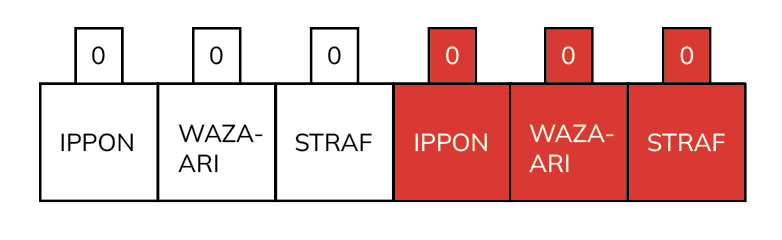

Judo
Judo behoeft eigenlijk weinig commentaar, daar iedereen wel eens judowedstrijden op televisie of ergens anders heeft
gezien. Judo is ontstaan uit het jiu-jitsu en bestaat “pas” 110 jaar.
Vooral het wedstrijdelement komt in het judo goed naar voren. Door de vele trainingsvormen komen alle aspecten uit het
judo, zoals kata, techniek en het maken van wedstrijden tot zijn recht. Doordat de lesgroepen zijn ingedeeld naar
leeftijd is het voor zowel jongens als meisjes een plezierige sport om te beoefenen. Je bent in het judo individueel en
tegelijkertijd in team verband met elkaar bezig.
Bij de Benoordenhoutse Judoschool wordt bij de judo lessen eveneens aandacht besteed aan de sociale vaardigheden. Judo
staat bekend om zijn opvoedkundige waarde en bevordert de ontwikkeling van het motorisch vermogen van de beoefenaar.
Kinderen kunnen op een verantwoorde manier hun energie kwijt, leren vallen en opstaan en rollen, zich weerbaar opstellen
en tevens zich te beheersen en controleren. Eis hierbij is wel dat de lessen door deskundige en bevoegde leraren worden
gegeven.
Lessen
Bij de Benoordenhoutse Judoschool zijn alle leraren rijks gediplomeerd en beschikken over een ruime ervaring op het
gebied van lesgeven. De lessen staan onder leiding van John Kleijn, 6e dan judo en Do Velema, oud Europees en
Wereldkampioen judo.
Er wordt een opleidingsprogramma aangeboden waarin de oefenstof is verdeeld over diverse graduaties. Iedere hogere,
landelijk erkende, graad tot en met de bruine band kan men behalen door het met goed gevolg afleggen van een
vaardigheidsexamen binnen de eigen sportschool, door onze rijkserkende examinatoren. Dan-examens vinden regionaal
plaats op voordracht van onze eigen leraren.
Leraar John
Hallo judoka's-in-de-dop! Mijn naam is John, jullie nieuwe sensei in de wereld van Judo. Ik ben hier niet alleen om
jullie de fijne kneepjes van deze prachtige sport bij te brengen, maar ook om samen met jullie een avontuur te beleven
vol plezier, discipline en natuurlijk heel veel worpen! Of je nu hier bent om jezelf fysiek uit te dagen, mentaal
sterker te worden, of gewoon om een nieuwe passie te ontdekken, ik sta klaar om jullie te begeleiden. Laten we samen de
mat betreden, respect voor elkaar tonen en vooral genieten van elke stap op onze judoreis. Zijn jullie er klaar voor?
Hajime!
Meer over Judo
In een judowedstrijd strijden 2 spelers tegen elkaar. Om duidelijk te maken door wie er een score is behaald, draagt de
ene een wit judo pak en de ander een blauw judo pak. Omdat bij de jeugd niet iedereen een blauw en een wit pak heeft, krijgen de spelers daar vaak boven op hun eigen
judoband een witte of blauwe (vaak ook een rode) band aan. De scores die de spelers nu behalen kunnen op het scorebord worden aangegeven.

Punten scoren
Je kunt op de volgende manier punten scoren:
- de tegenstander op de grond werpen
- de tegenstander langere tijd (vanaf 10 seconden) in een houdgreep houden
- de tegenstander laten opgeven (afkloppen), bijvoorbeeld door een houdgreep heel stevig vast
te houden of een wurging (vanaf 12 jaar) of een arm klem (vanaf 16 jaar) toe te passen.
Ippon
Er zijn 2 verschillende scores: waza-ari en ippon.
De hoogste score die je in judo kunt halen is de ippon.
Je krijgt een ippon als:
- je iemand volledig op zijn rug werpt
- je iemand 20 seconden in een houdgreep weet vast te houden
- je de ander dwingt op te geven (af te kloppen).
Als er een ippon is gescoord, is de wedstrijd afgelopen.
Waza-ari
De lagere score is de waza-ari.
Je krijgt een waza-ari als:
- je iemand niet volledig op zijn rug werpt, maar bijvoorbeeld op zijn zij
- je iemand tussen de 10 en 19 seconden in een houdgreep weet vast te houden
Straffen zijn een belangrijk onderdeel van een judowedstrijd. Je krijgt een straf als je iets doet wat niet mag. Als op
het einde van de wedstrijd (in een officiële wedstrijd na verlenging) de stand gelijk is, geven de straffen de doorslag.
De speler met de minste straffen heeft dan gewonnen. Een speler die 3 straffen krijgt, wordt gediskwalificeerd. De
tegenstander krijgt dan een ippon.